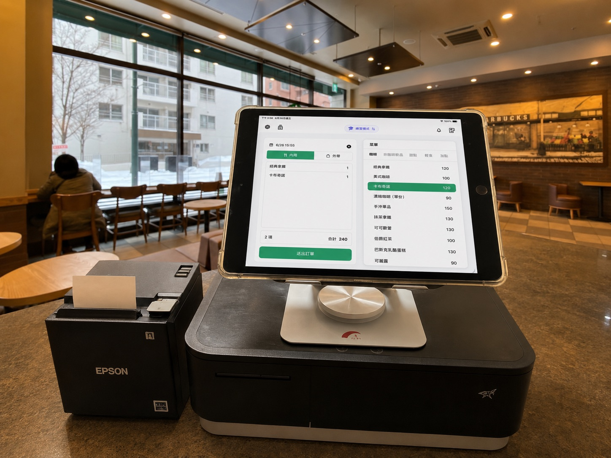
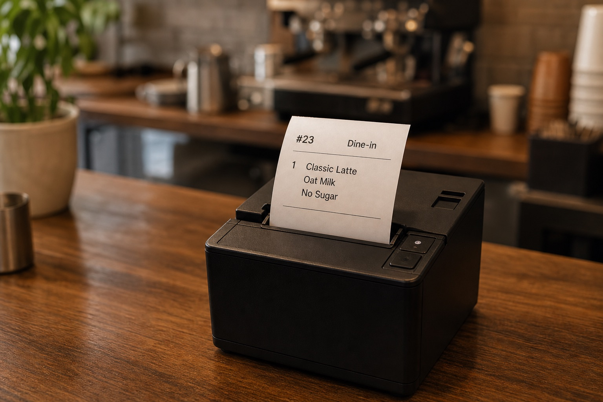
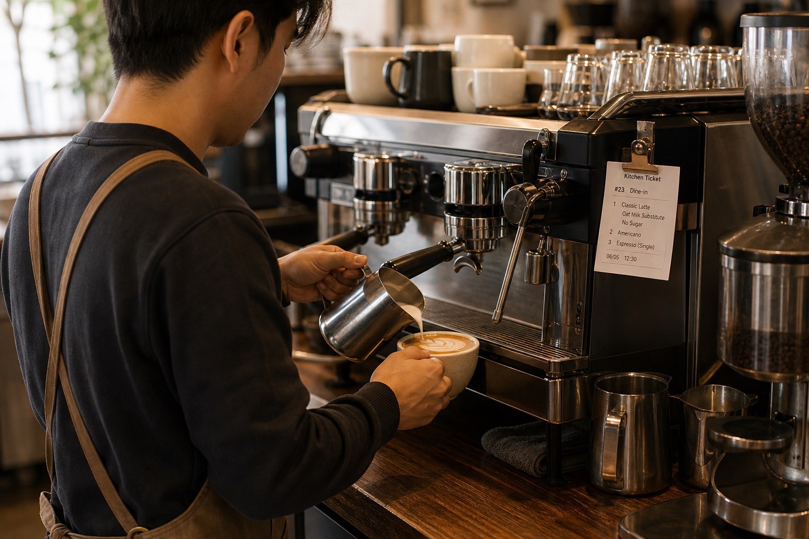
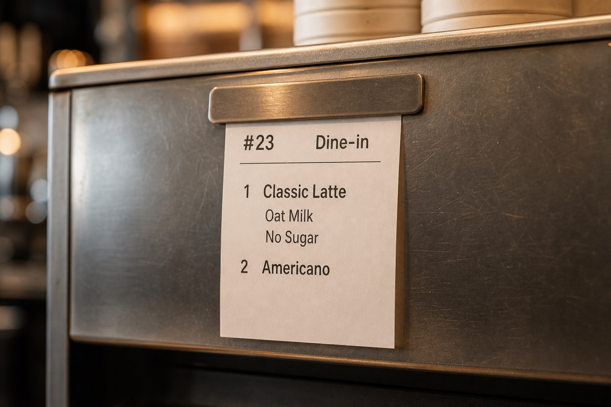
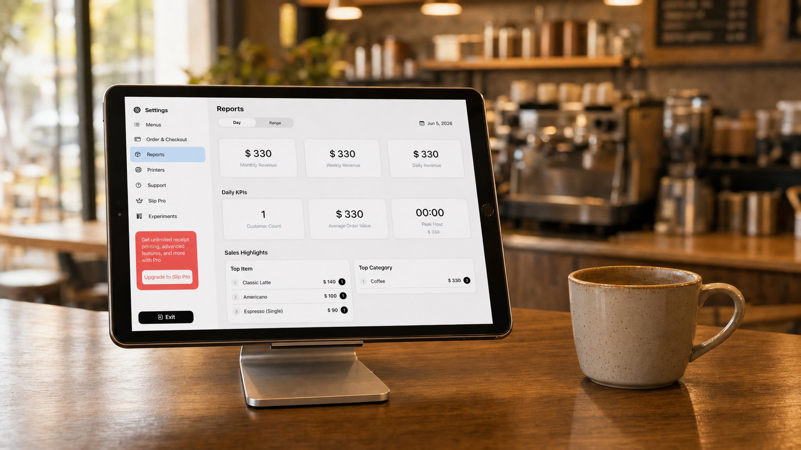

登録不要
オフライン対応
iPad 中心
レシート・調理伝票印刷
カフェの業務フロー
01
注文を取る
ドリンク、ペストリー、追加オプション、店内・テイクアウトの注文を、ひとつの使いやすい iPad 画面で作成します。

02
会計と電子インボイス
台湾 · 近日公開現金、または外部端末で完了した支払いを記録します。Slip 自体は決済処理を行いません。台湾の電子インボイス機能は今後のリリースに向けて準備中です。
03
調理伝票を送る
ドリンク、追加オプション、メモ、店内・テイクアウト情報を伝票に印刷し、コーヒーバーへ書き直しなしで届けます。

04
コーヒーを作る
カウンターから一度送れば、バリスタはエスプレッソマシンの横で同じドリンク、ミルク、甘さ、提供方法を確認できます。


明確に一日を締める。
シフト終了前に売上、返金、会計記録、現金確認を見直します。
